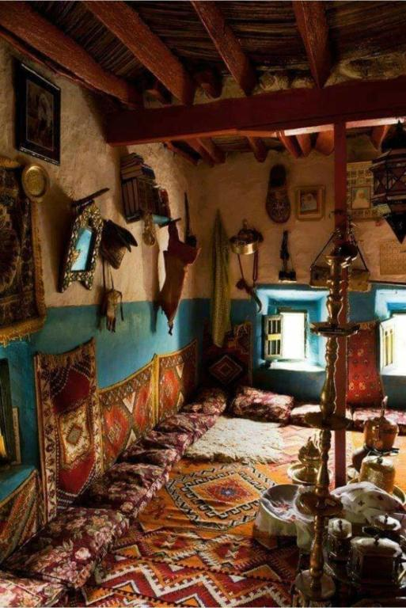
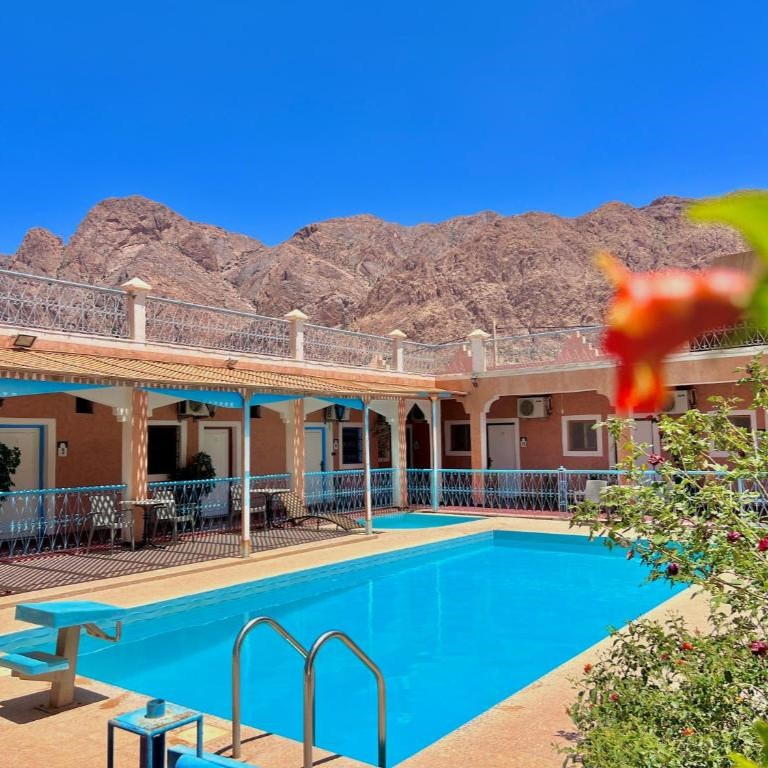
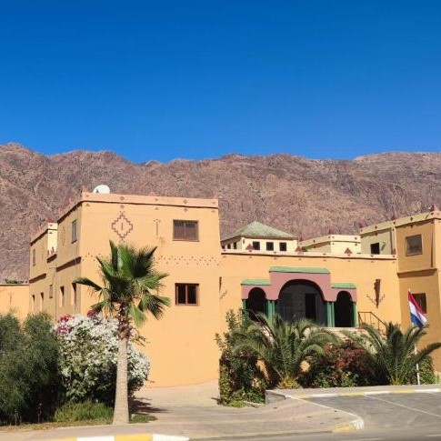

La Maison traditionnelle

Avec son atmosphère authentique et sa décoration traditionnelle, cet établissement invite à découvrir
le charme local. La Maison Traditionnelle se distingue par son ambiance conviviale, idéale pour
explorer les montagnes environnantes ou profiter d’un moment de calme.
Hotel L'Arganier d'Ammelne

À quelques minutes du centre de Tafraout, l’Hotel L’Arganier d’Ammelne charme par ses chambres
colorées et son jardin paisible. Dégustez un petit-déjeuner typique avec amlou ou une cuisine
berbère traditionnelle au restaurant. Parfait pour découvrir la culture locale tout en profitant du
confort et de la proximité de la place Tifawin.
Auberge Kasbah Chez Amaliya

L’Auberge Kasbah Chez Amaliya à Tafraout séduit par sa piscine, son jardin et ses vues sur les
montagnes environnantes. Ses chambres avec patio ou balcon offrent confort et intimité, tandis que
le restaurant sert une cuisine marocaine authentique. Idéal pour les amateurs de randonnée, vélo et
immersion dans la culture locale.